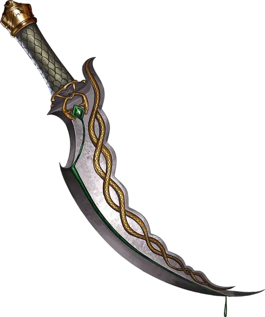

Кинжал яда
Dagger of Venom
Оружие (кинжал), редкое

Рекомендованная стоимость 501-5 000 зм
Вы получаете бонус +1 к броскам атаки и урона, совершённым этим магическим оружием.
Вы можете действием заставить этот клинок покрыться густым чёрным ядом. Яд остаётся 1 минуту, или пока атака этим оружием не попадёт по существу. Цель должна преуспеть в спасброске Телосложения Сл 15, иначе она получит урон ядом 2к10 и станет отравленной на 1 минуту. Вы не можете использовать повторно это свойство до следующего рассвета.